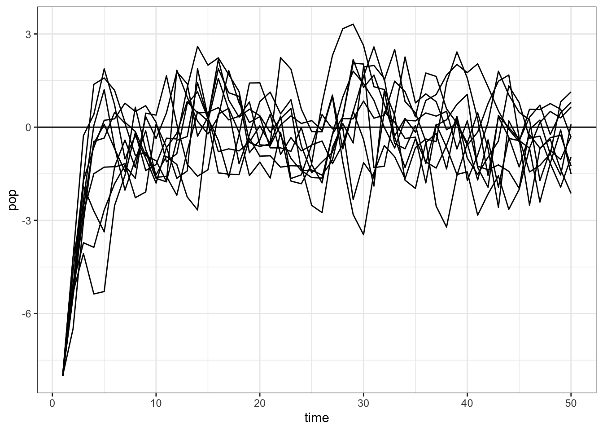
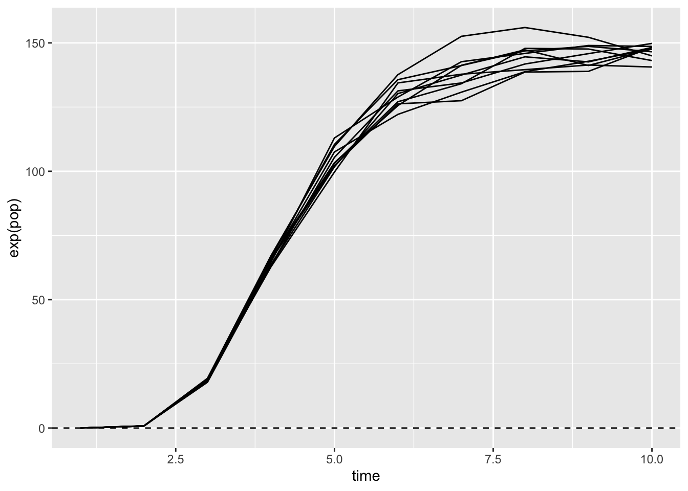
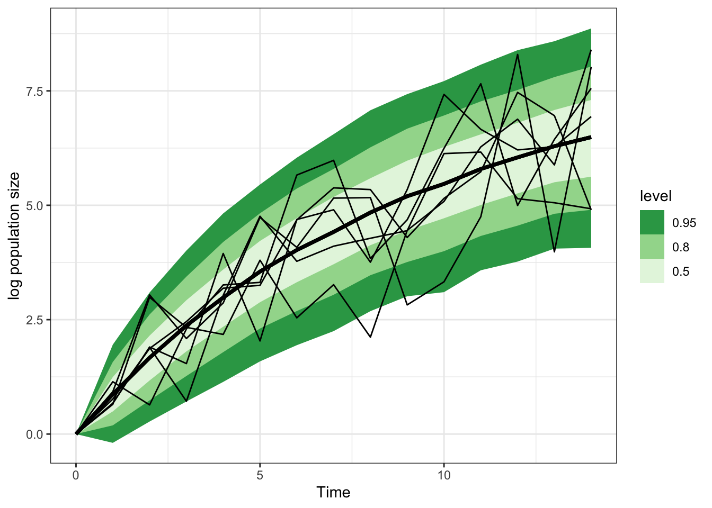

library(cmdstanr)
library(ggplot2)
library(tidyverse)
library(tidybayes)Background
How do species populations change over time?
How much of that change is caused by interactions with their community?
20 years ago a very influential paper was written by Ives, Dennis, Cottingham and Carpenter (Ives et al. 2003). Ives et al. present a method called a first-order Multivariate AutoRegressive model, also known as MAR(1). The core idea is that species are growing in a density-dependent way, but at a rate that is influenced by the per-capita effects of every other interacting population. A transition matrix captures the effects of each species on every other, and lets us predict how the vector species abundances changes over time.
Ives et al. advance this argument by beginning with univariate (single-species) approach, and that is what this post is about. Perhaps a future post will cover all the models.
\[ \begin{align} n_t &= n_{t - 1}e^{a + (b - 1)ln(n_{t-1})} \\ ln(n_t) = x_t &= a + bx_{t - 1} \end{align} \] We can predict the curve at any time \(t\) with this expression, from finite series:
\[ x_t = x_\infty + b^t(x_0 - x_\infty) \]
curve(200 + (.9)^x * (4 - 200), xlim = c(0, 100))
However there might be variation every time step because growth rate differences are caused by lots of unmeasured things.
\[ \begin{align} X_t &= a + bX_{t-1} + \epsilon_t \\ \epsilon &\sim \text{Normal}(0, \sigma) \end{align} \]
This leads to a mean and variance at time \(t = \infty\)
\[ \begin{align} \mu_\infty &= \frac{a}{1 - b} \\ v_\infty &= \frac{\sigma^2}{1 - b^2} \end{align} \]
and the mean and variance at time \(t\)
\[ \begin{align} \mu_t &= \mu_\infty + b^t(x_0 - \mu_\infty) \\ v_t &= \sigma^2\frac{1 - (b^2)^t}{1 - b^2} = v_\infty(1 - b^{2t}) \end{align} \] Everything here is on the log scale. The result is something that we can work with in a model for the likelihood – the mean and variance of a normal distribution.
Simulations
Here are simulations from a one-species AR-1 model that imitate Ives et al. figure 1.
simulate_pop_growth <- function(
a = 0,
b,
sigma = 1,
tmax = 50,
x0 = -8) {
xvec <- numeric(tmax)
xvec[1] <- x0
## process error
eta <- rnorm(tmax, mean = 0, sd = sigma)
for(time in 2:tmax){
xvec[time] <- a + b*xvec[time-1] + eta[time]
}
return(xvec)
}
map_dfr(1:10, ~ tibble(pop = simulate_pop_growth(b = 0.6, tmax = 50),
time = 1:length(pop)), .id = "sim") |>
ggplot(aes(x = time, y = pop, group = sim)) +
geom_line() +
geom_hline(yintercept = 0) +
theme_bw()
map_dfr(1:10, ~ tibble(pop = simulate_pop_growth(b = 0.95, tmax = 50),
time = 1:length(pop)), .id = "sim") |>
ggplot(aes(x = time, y = pop, group = sim)) +
geom_line() +
geom_hline(yintercept = 0)+
theme_bw()

It’s fun to take a look at this curve after exponentiating it, so as to see the real population sizes.
map_dfr(1:10,
~ tibble(pop = simulate_pop_growth(
a = 3, b = 0.4, tmax = 10, sigma = 0.03),
time = 1:length(pop)), .id = "sim") |>
ggplot(aes(x = time, y = exp(pop), group = sim)) +
geom_line() +
geom_hline(yintercept = 0, lty = 2)
Functions for the mean and variance
We can also get a plot of the changing mean and variance over time. Just from playing with these, we can see what the simulations earlier showed: that variance depends on both the process error \(\sigma\) and on the parameter that controls the amount of density dependence, \(b\).
calc_mean <- function(a, b, time, n_start){
mu_max <- a / (1 - b)
mu_max + b^time * (n_start - mu_max)
}
calc_var <- function(b, time, sigma){
bsq <- b^2
var_max = sigma^2/(1 - bsq)
var_max * (1 - bsq^time)
}
curve(calc_mean(0, .8, n_start = -8, time = x), xlim = c(0, 50))
curve(calc_var(.9, time = x, sigma = 1),
xlim = c(0,50), ylim = c(0, 10))
curve(calc_var(.8, time = x, sigma = 1), add = TRUE)Do these numbers reflect the distribution we see in the simulations?
set.seed(5002)
some_sims <- map_dfr(1:300, ~ tibble(pop = simulate_pop_growth(b = 0.9, tmax = 30),
time = 0:(length(pop)-1)), .id = "sim")
sim_meanvar <- some_sims |>
group_by(time) |>
summarize(sim_mean = mean(pop),
sim_var = var(pop))
some_sims |>
filter(time == 22) |>
pluck("pop") |>
hist(probability = TRUE, breaks = 30, xlab = "population size (log)", main = "Simulated and predicted population size distribution")
curve(dnorm(x,
mean = calc_mean(a = 0, b = .9, time = 22, n_start = -8),
sd = sqrt(calc_var(b = .9, time = 22, sigma = 1))),
add = TRUE)
a_fig <- 0
b_fig <- 0.8
nstart_fig <- -8
sigma_fig <- 1
tibble(
time = 0:25,
mean = calc_mean(
a = a_fig, b = b_fig, time = time,
n_start = nstart_fig),
sd = sqrt(calc_var(
b = b_fig, time = time, sigma = sigma_fig))) |>
ggplot(aes(x = time,
ymin = mean - sd*2,
ymax = mean + sd*2,
y = mean)) +
geom_ribbon(fill = "lightblue")+
geom_line(col = "darkblue", lwd = 2) +
geom_line(
aes(x = time,
y = pop,
group = sim),
inherit.aes = FALSE,
data = map_dfr(1:10,
~ tibble(
pop = simulate_pop_growth(
a = a_fig,
b = b_fig,
tmax = 25,
sigma = sigma_fig),
time = 0:(length(pop)-1)
),
.id = "sim"
)
) +
NULL +
labs(x = "Time", y = "log population size")

Aphids
Below I explore this model and try to fit some examples in Stan. I’m building this example to match work being done at UdeS by students of Matt Barbour. In these experiments, a single aphid is placed on a radish plant. Aphids are clonal, and give birth to live (!) young.
Each colony, incredibly, starts with a single aphid. This simplifies the expressions for the average and the variance because the starting population size is \(ln(1) = 0\)
\[ \begin{align} \mu_t &= a\frac{1 - b^t}{1 - b} &= \mu_\infty(1 - b^t) \\ v_t &= \sigma^2\frac{1 - (b^2)^t}{1 - b^2} &= v_\infty(1 - b^{2t}) \end{align} \]
The entire experiment fits on a single tray in a growth chamber, and Katerie replicated the experiment 6 times.
Make fake data
Simulating from the data-generating model
sim_one_gompertz <- function(K = 1000,
a = 1,
b = 0.86,
s = .3,
ntime = 15){
N = c(0,
rnorm(ntime - 1,
mean = a * (1 - b^(1:(ntime-1))) / (1 - b),
sd = s * (1 - (b^2)^(1:(ntime-1))) / (1 - b^2)
)
)
return(tibble(N = N, time = 0:(ntime-1)))
}
map_df(1:6, ~ list(sim_one_gompertz()), .id = "sim_id") |>
ggplot(aes(x = time, y = N, group = sim_id)) +
geom_line()# load the model in stan
ar_1 <- cmdstan_model(here::here("posts/2023-11-15-ives03-ts/ar1.stan"))
ar_1data{
int n;
vector[n] time;
vector[n] x;
}
// transformed data {
// vector[n] x = log(pop);
// }
parameters {
real a;
real<lower=0,upper=1> b;
real<lower=0> sigma;
}
transformed parameters {
real mu_max = a / (1 - b);
real sigma_max = sigma /sqrt(1 - b^2);
}
model {
a ~ normal(2, .5);
b ~ beta(5,2);
sigma ~ exponential(5);
x ~ normal(
mu_max .* (1 - pow(b, time)),
sigma_max .* sqrt(1 - pow(b^2, time))
);
}
generated quantities {
vector[15] x_pred;
x_pred[1] = 0;
for (j in 1:14) {
x_pred[j+1] = normal_rng(
mu_max * (1 - pow(b, j)),
sigma_max * sqrt(1 - pow(b^2, j))
);
}
}gomp_one_pop_df <- map_df(1:6, ~ list(
sim_one_gompertz()), .id = "sim_id")
gomp_nozero <- gomp_one_pop_df |>
filter(time != 0)
gomp_ar_1_sample <- ar_1$sample(data = list(n = nrow(gomp_nozero),
x = gomp_nozero$N,
time = gomp_nozero$time),
parallel_chains = 4, refresh = 0)Running MCMC with 4 parallel chains...
Chain 1 finished in 0.6 seconds.
Chain 2 finished in 0.5 seconds.
Chain 3 finished in 0.5 seconds.
Chain 4 finished in 0.6 seconds.
All 4 chains finished successfully.
Mean chain execution time: 0.6 seconds.
Total execution time: 0.8 seconds.gomp_ar_1_sample |>
spread_rvars(x_pred[time]) |>
ggplot(aes(x = time-1, ydist = x_pred)) +
stat_lineribbon() +
scale_fill_brewer(palette = "Greens", direction = -1) +
theme_bw() +
geom_line(aes(x = time, y = N, group = sim_id),
inherit.aes = FALSE, data = gomp_one_pop_df) +
labs(x = "Time", y = "log population size")
gomp_ar_1_sample$summary(variables = c("a", "b", "sigma",
"mu_max", "sigma_max")) |>
knitr::kable()| variable | mean | median | sd | mad | q5 | q95 | rhat | ess_bulk | ess_tail |
|---|---|---|---|---|---|---|---|---|---|
| a | 0.9098355 | 0.9063220 | 0.0686223 | 0.0670780 | 0.8005618 | 1.0257205 | 1.003307 | 1030.106 | 1314.908 |
| b | 0.8789703 | 0.8794605 | 0.0195818 | 0.0192753 | 0.8459716 | 0.9102432 | 1.003239 | 1013.561 | 1250.140 |
| sigma | 0.5482239 | 0.5452855 | 0.0489006 | 0.0485707 | 0.4737331 | 0.6320994 | 1.005132 | 1197.362 | 1523.607 |
| mu_max | 7.6344214 | 7.5211700 | 0.7723139 | 0.6918331 | 6.5748975 | 9.0189875 | 1.001850 | 1176.005 | 1381.095 |
| sigma_max | 1.1568230 | 1.1484850 | 0.0972406 | 0.0928182 | 1.0142685 | 1.3257135 | 1.002568 | 1713.400 | 1761.835 |
Say it again but different: parameterizing based on \(\mu\) and \(\sigma\)
# load the model in stan
ar1_mu_sigma <- cmdstan_model(here::here("posts/2023-11-15-ives03-ts/ar1_mu_sigma.stan"))
ar1_mu_sigmadata{
int n;
vector[n] time;
vector[n] x;
}
// transformed data {
// vector[n] x = log(pop);
// }
parameters {
real mu_max;
real<lower=0,upper=1> b;
real<lower=0> sigma_max;
}
transformed parameters {
// real mu_max = a / (1 - b);
// real sigma_max = sigma /sqrt(1 - b^2);
}
model {
mu_max ~ normal(7, .5);
b ~ beta(5,2);
sigma_max ~ exponential(1);
x ~ normal(
mu_max .* (1 - pow(b, time)),
sigma_max .* sqrt(1 - pow(b^2, time))
);
}
generated quantities {
vector[15] x_pred;
x_pred[1] = 0;
for (j in 1:14) {
x_pred[j+1] = normal_rng(
mu_max * (1 - pow(b, j)),
sigma_max * sqrt(1 - pow(b^2, j))
);
}
}gomp_ar1_mu_sigma_sample <- ar1_mu_sigma$sample(data = list(n = nrow(gomp_nozero),
x = gomp_nozero$N,
time = gomp_nozero$time),
parallel_chains = 4, refresh = 0)Running MCMC with 4 parallel chains...Chain 1 Informational Message: The current Metropolis proposal is about to be rejected because of the following issue:Chain 1 Exception: normal_lpdf: Scale parameter[1] is nan, but must be positive! (in 'C:/Users/UTILIS~1/AppData/Local/Temp/RtmpsPJFNU/model-1ec42fb87ed4.stan', line 22, column 2 to line 25, column 6)Chain 1 If this warning occurs sporadically, such as for highly constrained variable types like covariance matrices, then the sampler is fine,Chain 1 but if this warning occurs often then your model may be either severely ill-conditioned or misspecified.Chain 1 Chain 2 Informational Message: The current Metropolis proposal is about to be rejected because of the following issue:Chain 2 Exception: normal_lpdf: Scale parameter[1] is 0, but must be positive! (in 'C:/Users/UTILIS~1/AppData/Local/Temp/RtmpsPJFNU/model-1ec42fb87ed4.stan', line 22, column 2 to line 25, column 6)Chain 2 If this warning occurs sporadically, such as for highly constrained variable types like covariance matrices, then the sampler is fine,Chain 2 but if this warning occurs often then your model may be either severely ill-conditioned or misspecified.Chain 2 Chain 3 Informational Message: The current Metropolis proposal is about to be rejected because of the following issue:Chain 3 Exception: normal_lpdf: Scale parameter[1] is nan, but must be positive! (in 'C:/Users/UTILIS~1/AppData/Local/Temp/RtmpsPJFNU/model-1ec42fb87ed4.stan', line 22, column 2 to line 25, column 6)Chain 3 If this warning occurs sporadically, such as for highly constrained variable types like covariance matrices, then the sampler is fine,Chain 3 but if this warning occurs often then your model may be either severely ill-conditioned or misspecified.Chain 3 Chain 4 Informational Message: The current Metropolis proposal is about to be rejected because of the following issue:Chain 4 Exception: normal_lpdf: Scale parameter[1] is nan, but must be positive! (in 'C:/Users/UTILIS~1/AppData/Local/Temp/RtmpsPJFNU/model-1ec42fb87ed4.stan', line 22, column 2 to line 25, column 6)Chain 4 If this warning occurs sporadically, such as for highly constrained variable types like covariance matrices, then the sampler is fine,Chain 4 but if this warning occurs often then your model may be either severely ill-conditioned or misspecified.Chain 4 Chain 4 Informational Message: The current Metropolis proposal is about to be rejected because of the following issue:Chain 4 Exception: normal_lpdf: Scale parameter[1] is nan, but must be positive! (in 'C:/Users/UTILIS~1/AppData/Local/Temp/RtmpsPJFNU/model-1ec42fb87ed4.stan', line 22, column 2 to line 25, column 6)Chain 4 If this warning occurs sporadically, such as for highly constrained variable types like covariance matrices, then the sampler is fine,Chain 4 but if this warning occurs often then your model may be either severely ill-conditioned or misspecified.Chain 4 Chain 4 Informational Message: The current Metropolis proposal is about to be rejected because of the following issue:Chain 4 Exception: normal_lpdf: Scale parameter[1] is nan, but must be positive! (in 'C:/Users/UTILIS~1/AppData/Local/Temp/RtmpsPJFNU/model-1ec42fb87ed4.stan', line 22, column 2 to line 25, column 6)Chain 4 If this warning occurs sporadically, such as for highly constrained variable types like covariance matrices, then the sampler is fine,Chain 4 but if this warning occurs often then your model may be either severely ill-conditioned or misspecified.Chain 4 Chain 1 finished in 0.5 seconds.
Chain 2 finished in 0.4 seconds.
Chain 3 finished in 0.4 seconds.
Chain 4 finished in 0.5 seconds.
All 4 chains finished successfully.
Mean chain execution time: 0.5 seconds.
Total execution time: 0.7 seconds.gomp_ar1_mu_sigma_sample |>
spread_rvars(x_pred[time]) |>
ggplot(aes(x = time-1, ydist = x_pred)) +
stat_lineribbon() +
scale_fill_brewer(palette = "Greens", direction = -1) +
theme_bw() +
geom_line(aes(x = time, y = N, group = sim_id),
inherit.aes = FALSE, data = gomp_one_pop_df)gomp_ar1_mu_sigma_sample$summary(variables = c("mu_max", "b", "sigma_max")) |>
knitr::kable()| variable | mean | median | sd | mad | q5 | q95 | rhat | ess_bulk | ess_tail |
|---|---|---|---|---|---|---|---|---|---|
| mu_max | 7.2318447 | 7.2250250 | 0.3901113 | 0.3912878 | 6.6053570 | 7.8963640 | 1.000893 | 1365.238 | 1827.017 |
| b | 0.8707319 | 0.8713065 | 0.0133228 | 0.0127037 | 0.8470958 | 0.8912064 | 1.000917 | 1332.414 | 1584.640 |
| sigma_max | 1.1448564 | 1.1377700 | 0.0936798 | 0.0882369 | 1.0013000 | 1.3126500 | 1.000677 | 2085.846 | 2003.006 |
References
Ives, A. R., B. Dennis, K. L. Cottingham, and S. R. Carpenter. 2003. “ESTIMATING COMMUNITY STABILITY AND ECOLOGICAL INTERACTIONS FROM TIME-SERIES DATA.” Ecological Monographs 73 (2): 301–30. https://doi.org/10.1890/0012-9615(2003)073[0301:ECSAEI]2.0.CO;2.